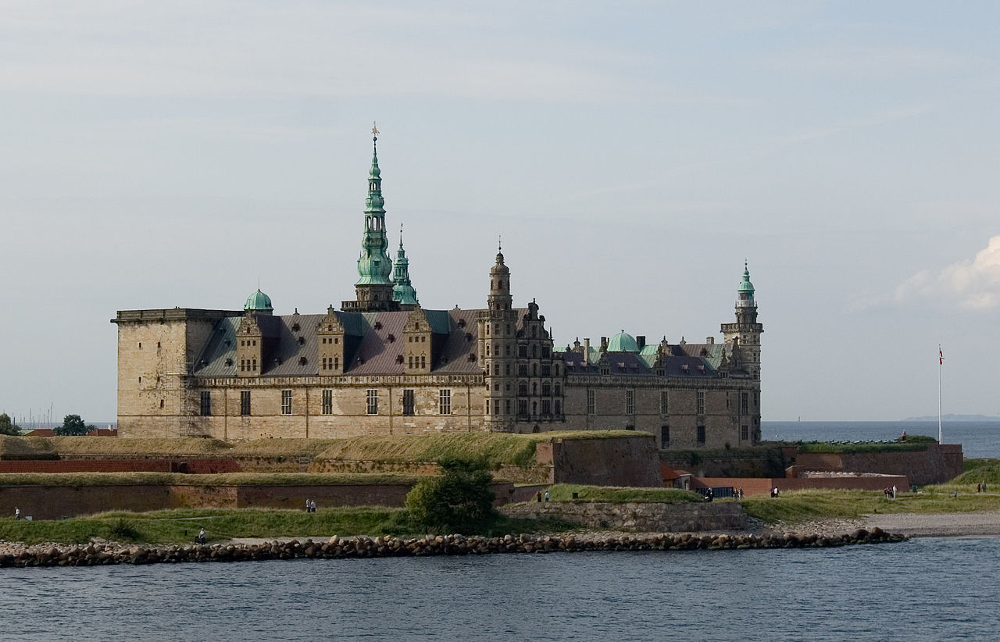
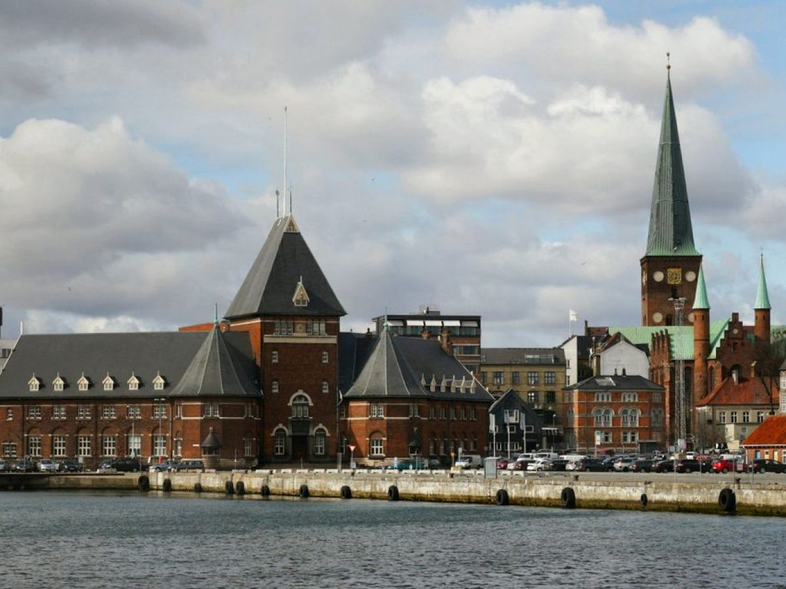

Denmark, adalah negara Nordik yang paling kecil dan paling utara. Denmark terletak di sebelah barat daya dari Swedia dan selatan dari Norwegia.
Negara ini terletak di Skandinavia, Eropa Utara sehingga termasuk Uni Eropa namun tidak berada di Semenanjung Skandinavia
Istana Kronborg

Istana Kronborg, terletak di Helsingor (Elsinore dalam bahasa Inggris), Denmark, adalah salah satu istana paling terkenal di negara ini.
Berikut adalah sejarah singkat Istana Kronborg:
Pembangunan Awal : Istana Kronborg didirikan pada abad ke-15 oleh Raja Erik VII dari Denmark. Istana ini dibangun sebagai benteng strategis untuk mengendalikan Selat Oresund, yang merupakan jalur air penting yang menghubungkan Laut Utara dan Laut Baltik.
Perkembangan Menjadi Istana : Pada abad ke-16, di bawah pemerintahan Raja Frederick II, benteng ini diubah menjadi istana yang lebih mewah. Istana Kronborg menjadi salah satu tempat tinggal kerajaan Denmark yang paling megah dan indah.
Sebagai Latar "Hamlet" Karya Shakespeare : Salah satu kontribusi terbesar Istana Kronborg terhadap budaya dunia adalah penggunaannya sebagai latar belakang dalam drama terkenal William Shakespeare, "Hamlet." Dalam drama ini, istana dijuluki "Elsinore." Hal ini telah memperoleh ketenaran internasional bagi istana tersebut.
Ekspansi dan Pemugaran : Selama beberapa abad, Istana Kronborg mengalami beberapa perluasan dan pemugaran. Pada abad ke-17, istana ini mengalami kerusakan parah akibat kebakaran, tetapi kemudian direstorasi dengan cermat.
Masa Kejayaan : Istana Kronborg mencapai masa kejayaannya pada abad ke-17 sebagai salah satu istana terpenting di Eropa Utara. Bangunan-bangunannya menggambarkan arsitektur Renaisans dan manierisme yang mewah.
Pemilihan sebagai Situs Warisan Dunia UNESCO : Pada tahun 2000, Istana Kronborg diakui sebagai Situs Warisan Dunia UNESCO. Pengakuan ini mencakup istana itu sendiri dan benteng-benteng yang melindunginya.
Penggunaan saat Ini : Hari ini, Istana Kronborg digunakan untuk berbagai acara budaya dan seni, termasuk pertunjukan teater, konser, dan pameran seni. Ini juga merupakan daya tarik wisata yang populer di Denmark, menarik pengunjung dari seluruh dunia.
Istana Kronborg adalah salah satu istana paling terkenal di Denmark, dan keberadaannya yang bersejarah, arsitektur megahnya, serta peran pentingnya dalam sastra dan seni menjadikannya ikon budaya Denmark yang penting.
Kota Tua Aarhus

Kota Tua Aarhus, atau "Den Gamle By" dalam bahasa Denmark, adalah sebuah museum luar ruang yang terletak di Aarhus, Denmark.
Berikut adalah sejarah singkat Kota Tua Aarhus:
Pembukaan pada 1909 : Kota Tua Aarhus dibuka pada tahun 1909 sebagai museum yang menghadirkan kembali kehidupan dan arsitektur Denmark pada abad pertengahan. Tujuan utamanya adalah untuk mempertahankan dan memamerkan warisan budaya dan arsitektur Denmark.
Konsep Museum Hidup : Museum ini diatur seperti kota asli pada abad ke-16, dengan jalan-jalan berbatu, rumah-rumah, gereja-gereja, toko-toko, dan taman-taman yang menggambarkan periode tersebut. Ini adalah salah satu museum "hidup" tertua di dunia, yang berarti pengunjung dapat merasakan kehidupan di masa lalu.
Koleksi yang Kaya : Kota Tua Aarhus memiliki koleksi artefak dan rekonstruksi yang sangat kaya, termasuk lebih dari 75 bangunan yang berasal dari periode abad pertengahan hingga abad ke-19. Ini mencakup rumah-rumah, pertokoan, sekolah, dan bahkan hewan-hewan peliharaan yang hidup di masa lalu.
Pengembangan dan Pemugaran : Seiring berjalannya waktu, museum ini mengalami pengembangan dan pemugaran berulang untuk memastikan keberlanjutannya sebagai daya tarik wisata dan pendidikan yang penting di Aarhus.
Tempat Wisata Populer : Kota Tua Aarhus adalah salah satu tempat wisata paling populer di Denmark dan menarik ribuan pengunjung setiap tahun. Pengunjung dapat menjelajahi jalanan dan bangunan-bangunan kuno, berinteraksi dengan pemain karakter yang mengenakan kostum era tersebut, dan mengenal lebih dekat kehidupan sehari-hari di masa lalu.
Pusat Kegiatan Budaya : Selain sebagai daya tarik wisata, Kota Tua Aarhus juga menjadi pusat untuk berbagai acara budaya, pertunjukan, pameran seni, dan acara khusus sepanjang tahun.
Kota Tua Aarhus adalah salah satu tempat bersejarah yang paling menarik di Denmark, yang memberikan pengalaman unik dalam menjelajahi sejarah dan budaya negara tersebut.
Katedral Roskilde
Katedral Roskilde, atau Roskilde Domkirke dalam bahasa Denmark, adalah katedral yang terletak di Roskilde, Denmark.
Berikut adalah sejarah singkat Katedral Roskilde:
Pembangunan Awal : Katedral Roskilde pertama kali dibangun pada tahun 1170 oleh Raja Valdemar I dari Denmark sebagai bagian dari upayanya untuk mendirikan sebuah pusat agama yang kuat di Denmark.
Arsitektur Romanesque : Katedral ini awalnya memiliki arsitektur Romanesque, tetapi seiring berjalannya waktu mengalami perluasan dan pemugaran yang menggantikan elemen-elemen arsitektur Romanesque dengan gaya Gotik.
Pemakaman Kerajaan : Salah satu fitur paling menonjol dari Katedral Roskilde adalah bahwa ia berfungsi sebagai pemakaman para raja dan ratu Denmark. Banyak monark Denmark dimakamkan di dalam katedral ini, sehingga menjadikannya makam kerajaan yang penting.
Koleksi Makam Kerajaan : Di dalam katedral, terdapat makam-makam yang menghormati banyak monark terkenal Denmark, termasuk makam Ratu Margrethe I, Raja Christian IV, Raja Frederick V, dan banyak lainnya.
Pengakuan UNESCO : Pada tahun 1995, Katedral Roskilde diakui sebagai Situs Warisan Dunia UNESCO karena nilai sejarahnya yang signifikan dan perannya dalam pemakaman kerajaan Denmark.
Arsitektur Gotik : Katedral ini menggabungkan elemen-elemen arsitektur Gotik yang megah, termasuk jendela-jendela kaca patri berwarna dan pilar-pilar yang tinggi.
Pemugaran dan Pelestarian : Seiring berjalannya waktu, Katedral Roskilde telah mengalami pemugaran dan restorasi berulang kali untuk mempertahankan keindahannya dan memastikan kelangsungannya sebagai pusat keagamaan dan budaya Denmark.
Hari ini, Katedral Roskilde tetap menjadi salah satu situs bersejarah yang paling penting di Denmark. Selain sebagai tempat ibadah, katedral ini juga menjadi daya tarik wisata utama bagi pengunjung yang tertarik pada sejarah Denmark dan arsitektur megah era Gotik.